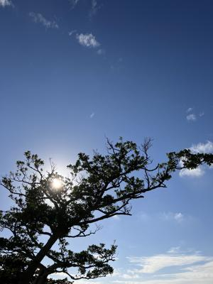

うるがいの話 ある日
最新: 婿は大変である【うるがいの話 ある日】とは 一日だけのプログです
『うるがいの話』の最新一日だけのプログで、通信料が少なく経済的だ。カニの画像をクリックすると全ての日付が載る『うるがいの話』サイトを表示します
|
|
【うるがいの話】 うるがい(ｳﾙｶﾞｲ urugai)とは、『もずくがに』の名前でとても大きくなります。 |
|---|---|
|
|
【カミマヤーの話】 猫のことを方言でマヤーといいます。カミマヤー（kamimayaa）とは、神の猫のことです。 |
|
【たながぁの音楽】 たながぁ（ﾀﾅｶﾞｰ tanagaa）とは手長えびのことで、何種類かあり大きいのは車 エビぐらいになります。 |

|
【ぶながぁの話】 ぶながぁ(ﾌﾞﾅｶﾞｰ bunagaa)とは、赤い髪の毛、赤い身体、そして身長は１ｍ２０ｃｍ ぐらい、川の蟹を食べているの目撃された。場所は沖縄県国頭郡大宜味村のと ある村僕の隣近所に住んでいる爺さんから、聞いた話です。 |
|
|
【ギーマの話】 ギーマ(giima)とは、山原の里山に咲くスズランに似た、 花を付けます。実は食べられます、 気が付くと口の周りが紫になっています。 |
2023年12月20日 (水）婿は大変である
15:37

今日は一日中、雨である。昨日、お義母さんの病院へ付き添った。昨日は今年
最後の暖かい日で、天気も良くラッキーだった。『病院へは何か月振りかね？
』、ピース（２カ月）で答える。『コドモ達は、元気かね』、はい、『ヨメは
体調不良なのかね？』、はい、ズーと体調不良なので僕が付き添っています。
これを、十回以上繰り返す。自力では、危ないので手を握って歩行を補助する
。トイレの前まで連れていく、待合室で『早く死にたい、舌を噛んで』と暴言
を言うので、こちら側から一方的に世間話をする。周りの人はうるさいかもし
れないが、暴言よりはマシである。１時間半の間、ヨメも嫌がる付き添いを婿
はするのである。付き添いがいない老人達は、看護師の手助けでなんとやって
いる。お義母さんに、付き添いがいるだけ有り難いよネと言う。付き添いがイ
ヤなヨメは、車での送迎を担当する。
１５時３２分 ビットコインの総資産 ￥１７、８７２（↑９）